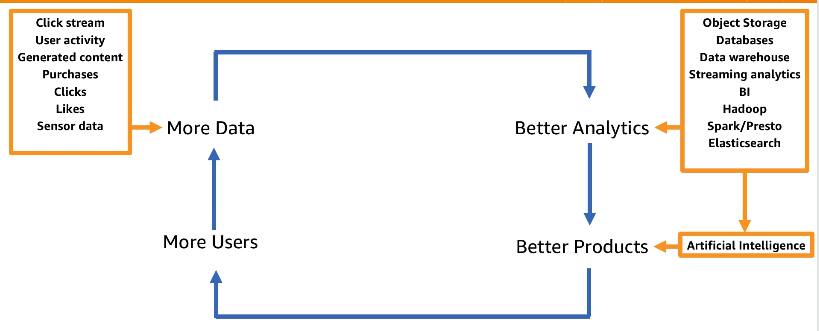
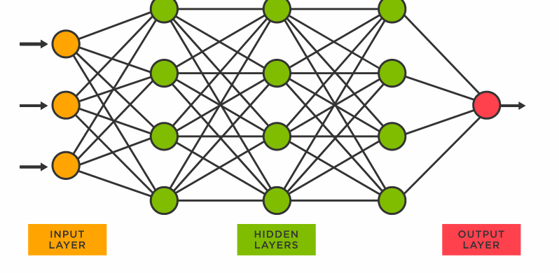
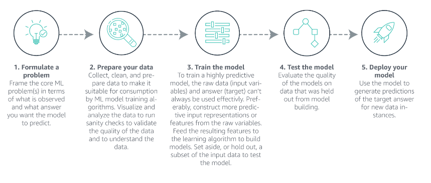
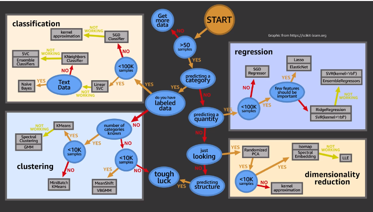
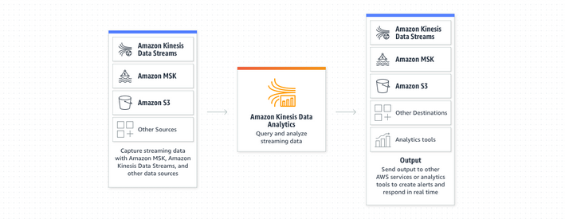

# 9 Data Science
9.1 DataCamp Python Skills for Data Science
9.1.1 Introduction to Python
9.1.1.1 Python Basic
Version 3.x - https://www.python.org/downloads
We can save the script with .py and use python as calculator or usa ipython or python shell
# Addition and subtraction
print(5 + 5)
print(5 - 5)
# Multiplication and division
print(3 * 5)
print(10 / 2)
# Exponentiation
print(4 ** 2)
# invest
print(100 * 7.1)
# Modulo
print(18 % 7)
# How much is your $100 worth after 7 years?
print(100*1.1**7)Variable
Specific, case-sensitive
type(<variable>)to check the type of variableTypes
- int - integer numbers
- float - real numbers
- bool - True , False
- str - string, text
Lists
- [a,b,c, 1, True, 1.2 [a,b]]
- Collection of values, contain any type
- Slicing
- First element index 0
- -1 last element
- Range [3:5] , last element not included [start : end(excluded)]
- Subsetting list of list [][]
9.4 AWS Data Science Certification
9.4.1 Demystifying AI / ML / DL
What is AI ?
Ability to scan and interpret the physical devices, for that we need to provide info of real world
Knowledge (data) + Software programs = decisions
Transfer human expertise to solve a specific problem (model)
Machine learning and Deep learning are subset of AI
ML : Data -> processing -> Predictions
Machine learning can do :
- Make predictions
- Optimize utility functions
- Extract hidden data structures
- Classify data
DL
- Enable the machine define the features itself, for instance, you show the machine several samples of rectangle and machine will be able to extract the features and recognize a probably rectangle.
How to Establish an Effective AI Strategy
- Fast computing environments
- Data gathering from several sources, ubiquitous data
- Advanced learning algorithms
The Flywheel of Data

- AI on AWS

What is Machine Learning
Subset of AI
Process that takes data and use that to make predictinos and support decisions
Types of Machine Learning

Suggestion
Intro to ML video 1:
Complete sequence of videos here
What is Deep Learning
- Deep Learning is a subset of Machine Learning
- Use many layers of non-linear processing units, for feature extraction and transformation
- Algorithms can be supervised and unsupervised

Types of Neural Networks
- Feedforward
- Recurrent
AWS Deep Learning Based Managed Services
Amazon Lex : conversational engine
Amazon Polly : lifelike speech
Amazon Rekognition : Image analysis
AWS Deep Learning AMI (custom models)
AMI is pre-configured with : MXNet, TensorFlow, Microsoft Cognitive Engine, Caffe, Theano, Torch and Keras
Support auto-scaling cluster of GPU for large training
Suggestion
Intro to DL video 1:
Complete sequence of videos here
9.4.2 Machine Learning Essentials for Business and Technical Decision Makers
What is Machine Learning(ML) ? : Process of training computers, using math and statistical processes, to find and recognize patterns in data.
Iterative process

How Amazon uses ML in products ?
- Browsing and purchasing data to provide recommendations
- Use voice interactions with
Alexausing NLP - Use ML to ship 1.6M packages per day
How is machine learning helping AWS customers?
Amazon Forecast
Amazon Fraud Detector
Amazon Personalize (product recommendation,direct marketing)
Amazon Polly (TTS - text-to-speech) uses advanced deep learning technologies to synthesize natural-sounding human speech
Amazon Transcribe (STT - speech-to-text)
Amazon SageMaker
How does machine learning work?
- What is AI ? : any system that is able to ingest human-level knowledge to automate and accelerate tasks performable by humans through natural intelligence.
Narrow AI : where an AI imitates human intelligence in a single context (Todays AI)
General AI : where an AI learns and behaves with intelligence across multiple contexts (Future AI)
What kind of solutions can ML provide?
- Regression : Prediction a numerical value , Zillow case
- Classification : Predicting label, duolingo case
- Ranking : Ordering items to find most relevant , Dominos case
- Recommendation : Finding relevant items based on past behavior Hyatt Hotels
- Clustering : Finding patterns in examples NASA
- Anomaly detection : Finding outliers from examples, Fraud.net cases

What are some potential problems with machine learning ?
- Ingestion of poor quality data
- Explain complex models
9.4.3 Machine Learning for Business Leaders
When is ML an option ?
- If the problem is persistent
- If the problem challenges progress or growth
- If the solution needs to scale
- If the problem requires personalization ir order to be solved
What Does a successfull ML solution require ?
- People (Data Scientist, Data Engineer, ML Scientist, Software Engineers, etc)
- Time
- Cost
Ask the right questions to team
- What are the made assumptions ?
- What is your learning target (hipotesis)?
- What type of ML problem is it ?
- Why did you choose this algorithm ?
- How will you evaluate the model performance ?
- How confident are you that you can generalize the results ?
How to define and scope a ML Problem
- What is the specific business problem ?
- What is the current state solution ?
- What are the current pain points ?
- What is causing the pain points ?
- What is the problems impact ?
- How would the solution be used ?
- What is out of scope ?
- How do you define success (success criteria)?
Input Gathering
- Do we have sufficient data ?
- Is there labeled examples ?
- If not , how difficult would it be to create/obtain ?
- What are our features ?
- What are going to be the most useful inputs ?
- Where is the data ?
- What is the data quality ?
Output Definitions
- What business metric is defining success ?
- What are the trade-offs ?
- Are there existing baselines ?
- If not, what is the simplest solutions ?
- Is there any data validation need to green light the project ?
- How important is runtime and performance ?
With those inputs and outputs we can formulate the problem as a Learning Task, is this a classification or regression problem ? What are the risks ? etc
When should you consider using machine learning to solve a problem ?
- Use ML when software logic is too difficult to code
- Use ML when the manual process is not cost effective
- Use ML when there is ample training data
- Use ML when the problems is formalizable as an ML Problem (reduce to well known ML problem regression, classification, cluster)
When is Machine Learning NOT a Good Solution?
- No data
- No Labels
- Need to launch quickly
- No tolerance for mistakes
When is Machine Learning is a Good Solution ?
- Difficult to directly code a solution
- Difficult to scale a code-based solution
- Personalized output
- Functions change over time
9.4.4 Process Model : CRISP-DM on the AWS Stack
Into
CRISP-DM Cross Industry Standard Process - Data Mining, excelent framework to build data science project

There are 6 phases and the first (Business Understanding) one is the most important one, in that phase you going to understand the problem and know if this suitable for ML or not.
Phase 1: BUSINESS UNDERSTANTING
This phase there are 4 tasks :
Understating business requiriment : Important to totally understand the customer needs and think on the questions from a business perspective that need to be answered (areas and business that need to improve) and convert that a problem that need to be solved or a problem that need to be answered, also high the critical features of projects (people, resources, etc)
Analyzing support information : Collect information necessary based on the business question from task 1, make sure to list all the required resources and assumptions, analyze the risks, make a plan for contingencies and compare the costs and benefits for the project
Converting to a Data Mining problem: Get the business question from task 2 and convert in machine learning objective (classification ? ; regression ?; clustering ? ) problem and define a criteria for successful
Preparing a preliminary plan: That plan should describe the project and steps to achieve the goal:
- Timeline with number of stages and duration
- Dependencies
- Risks
- Business and Data Mining Goals
- Evaluation methods
- Tools and techniques necessary for each stage
Phase 2: DATA UNDERSTANTING
This phase there are basically 3 tasks :
Data Collection : Need to analyze which data should be be used for the project, detail the sources and steps to extract data, having the data analyze for additional requirements (checking missing values, if data need to be encode or decode, if need to be normalized, check if are the specific fields that are more important to solve the problem ?) and consider other data sources (customer is an important resource because they know the domain knowledge).
Data properties : Describe the data (Structured / Unstructured), amount of data used and metadata properties, including the complexity of data relationships and key features, also include the basics statistics (mean, median, etc), check the correlation of the main attributes, we can use python, sql, R and reporting tools using graphs to update the assumptions is necessary
Quality : How many attributes contain errors ? , There are missing data ? Check the meaning of the attributes and complete the missing data, also check the inconsistencies and report all problems on this task and list the steps to solve this problem
On AWS we can perform this task using Amazon Athena, Amazon QuickSight and AWS Glue
Glue Manage ETL service
- Step 1 : Build data catalog
- Step 2 : Dev env to test and Generate and edit transformations
- Step 3 : Schedule and run your jobs
Athena interact query service to run SQL queries on Amazon S3
- Serveless where only pay for the queries
- Integrated with quicksight
- Support ANSI SQL operations and functions
QuickSight
- Fast cloud powered BI service
- We can scale
- 1/10th of the cost of traditional BI solutions
- Secure and collaboration
Phase 3 & 4: DATA PREPARATION TASK & MODELING
Phase 3 consist in two tasks
Final dataset selection : Here we should analyze the size, record selection and data types, also include and exclude columns based on data understand phase
Preparing the data:
Clean for quality
- Working on missing data : Dropping rows with missing values or adding a default value (mean, median) or work with imputation to add the missing data, we can also use statistical methods to calculate the value. It is also important to clean the corrupt data or variable noise
Transforming for the best performance of model
- Derive additional attributes from the original (Datatime to hour, month, day ), use one-hot encoding to convert the strings , also recommend to normalize the data
Merging all datasets in one final dataset
- Create the final dataset using joins and concatenations , recommend to revisit the Data Understanding phase to review the attributes
Formatting to properly work on model
- Reformatting the data types and attributes (covert variables), randomly shuffle the data and remove unicode if necessary
Phase 4 Modeling
This phase work together with Data Preparation phase
Modeling have 3 steps:
Model selection and creation : Here we will select a model to address the ML problem (Regression for numeric problems and Random forest for Classification)
Model testing plan : Before create the model we need to define how to test the model accuracy, split the data in Test and Training dataset (30/70), also there are other techniques, such as k-fold, for the model evaluation criterion we can use MSE, ROC, Confusion matrix, etc
Model parameter tuning/testing : build the model , train the model and tweak the best performance (document the hiperparameters and reason), build multiple models with different parameters and report the findings
Tools for Data Preparations and Modeling :
Amazon EMR + Spark
- We can use EMR and the package Spark MLlib to create DataFrame based APIs for ML, using ipython notebooks, zepplin or R studio
- Support Scala, Python, R, Java and SQL
- Cost savings : Leverage spot instance for the task nodes
Amazon EC2 + Deep Learning AMI
- The two main EC2 base ML environments are R studio and AWS Deep Learning AMI, this one preinstalled with GPU and frameworks ( MXNet, TensorFlow, Caffe2, Tourch, Keras, etc ) , also include Anaconda Data Science platform with popular libraries like numpy, scikit-learn, etc
Phase 5: EVALUATION
In this phase we have two main tasks :
Evaluate how the model is performing related to business goals
Dependens on :
- Accuracy of model or evaluation criteria on planning phase
- Converte the assessments to business need (monetary cost)
- Make a summary of results, ranking the models based on successfully criteria
Make final decision to deploy or not
Review the project and the assess the steps taken in each phase and perform quality assurance checks (is the data available for future training, model performance is using the determinated data)
If the process fail to deploy due the successfully criteria, analise the business goals and try different approache or update the business goals and try again
Phase 6: DEPLOYMENT
Tasks :
Planning deployment
- Runtime : Identity where it going to run (EC2, EC2 Container Service, AWS Lambda)
- Application deployment : AWS Code deploy (EC2), AWS OpsWorks (use chef), AWS Elastic Beanstalk (run the models on virtual servers)
Maintenance and monitoring
- Infrastructure deployment : AWS CloudFormation, AWS OpsWorks, AWS Elastic Beanstalk
- Code Management : AWS CodeCommit, AWS CodePipeline (CI/CD) and AWS Elastic Beanstalk
- Monitoring: Amazon CloudWatch, AWS Cloud Trail and AWS Elastic Beanstalk
Final report
- Document all steps and highlight processes used
- Goals met the project goals ?
- Detail the findings
- Identify and explain the model used and reason behind using the model
- Identify the customer groups to target using this model
Project review
- Outcomes of the project : Summarize results and write thorough documentation and generalize the whole process to make it useful for the next iteration
- Task : create EC2 install packages and access from browser ssh
<connection> -L localhost:8888:localhost:8888
Setup EC2 to run notebook
Create EC2 instance
Connect to instance via ssh
Install python
sudo yum update
sudo yum install python- Create a virtual environment and activate
python3 -m venv basic
source ~/basic/bin/activate- Install basic database science packages
pip install pandas numpy matplotlib seaborn scikit-learn statsmodels jupyter jupyterlab- Configure the jupyter password
jupyter notebook --generate-config
jupyter notebook password- Open a tunnel and Start jupyter notebook
ssh -i "<key>.pem" ec2-user@<ec2 machine>m -f -N -L 8888:localhost:8888
jupyter notebook --no browser
- Access the notebook from browser http://localhost:8888/
9.4.5 Machine Learning Terminology and Process
End to End Machine Learning Process and common ML Terminoly
ML Terminology
- Training : How ML use historical dataset to build prediction algorithm(model)
- Model : Core of ML process, enable the machine to determine an output variable(prediction) from an input variable
- Prediction (inference): Best estimate of a given input would be
Process
The Business Problem
The Machine Learning framing (Transform the business problem into ML problem), define the type of ML
Data Collection and Integration (Collect data from multiple sources)
Data Preparation (steps before ML algorithm use the data)
- Data Cleaning
- Impute missing values (new variable indication the missing value, remove rows, imputation(mean, media, other))
- Shuffle training data (stract a fraction of data for training)
train_data = train_data.sample(frac = 1) - Test-validation-train split (20% test , 10% validation, 70% train)
- Cross validation (Validation(30/70 or 20/10/70), Leave-one-out, k-fold)
Data Visualization and Analysis (better understand of data)
- Statistics
- Scatter-plots
- Histograms
Feature Engineering
Binning : To introduce non-linearity into linear models
Combine features together to create complex feature
Take the log of feature or polinomial power of target
Text-Features :
- Stop-words removal / Steamming
- Lowercasing, punctuation removal
- Cutting off very high/low percentiles
- TF-IDF normalization
Web-page features
- multiple fields of text : URL, title, frames, body
- relative style and position
Model training
Loss Function (How far predictions are from objective)
- Square : regression, classification
- Hinge : classification only (robust to outliers)
- Logistic : Classification only (better for skewed class distribution)
Regularization
- Prevent overfitting by constraining weights to be small
Learning Parameters (decay rate) How fast the algorithm learn
- Decaying too aggressively - algorithm never reaches optimum
- Decaying too slowly - algorithm bounces around, never converge to optimum
- Model Evaluation
Overfitting & Underfitting
- Dont fit data to obtain maximum accuracy

Bias-Variance Tradeoff
- Bias : Difference between average model predictions and true target values
- Variance : Variation in predictions across different training data samples
Evaluation Metrics
Regression :
- RMSE - Root Meam Squared Error
- MAPE - Mean Absolute Percent Error
- R^2 - How much better is the model compared to just pick the best constrant (R^2 = 1 - (model MSE / variance))
Classification :
Confusion Matrix
ROC Curve
Precision-Recall
- Precision : How correct we are when we what to predict be positive
- Recall (Sensitivity) : Fraction of negative that was wrongly predicted

- Business Goal Evaluation
- Evaluate how the model is performing related to business goals
- Make the final decision to deploy or not
Evaluation depends on:
- Accuracy
- Model generalization on unseen/unknown data
- Business success criteria
If we need more data or have more data we can add data (Data Augmentation) or feature (Feature Augmentation)
- Prediction : The production data MUST have the same distribution as the training data
9.4.6 Data Engineering
S3
- Buckets must have a global unique name
- Objects (file) have a key. The key is the FULL path :
<my_bucket>/my_folder/my_file.txt - Max 5TB
- Backbone for ML services
- Perfect use case for Data Lake, with infinite size , 99.999999999% durability across multiple AZ and 99.99% availability (not available 53 min a year)
- Obejct storage supports any file format (CSV, JSON, Parquet, ORC, Avro, Protobuf)
- We can partition the data by date, by product or any strategy we would like, some tools perform this task forus (Glue and Kinises)
| Classes | Details | Use Case |
|---|---|---|
| S3 Standard - General purpose | * 99.99% availability (53min a year not available) * Used for frequently accessed data * Low latency and high throughput * Sustain 2 concurrent failures |
Big data analytics, mobile and gaming applications |
| S3 Standard-Infrequent Access IA | * For data that is less frequently accessed, but requires rapid access when needed * Low cost than S3 standard, cost on retrieval * 99.9% availability |
Used for Disaster recovery |
| S3 One Zone-Infrequent access | * High durability 99.999999999% in a single AZ, data lost when AZ distroied * 99.5% availability |
Storing secondary backup copies of on-prem data, or data you can recriate |
| S3 Glacier Instant Retrieval Low cost for archive/backup |
Instant retrieval : ms retrieval , min storage duration 90 days Flexible Retrieval : Expedite 1 to 5min , Standard 3 to 5 hours, min duration 90 days Deep Archive : Standard 12hrs, bulk 48hrs, min duration 180 days, for long archive |
|
| S3 Intelligent Tiering | * Small monthly monitoring and auto-tiering fee * Move objects automatically between Tiers based on usage * No retrieval charge * Frequent Access : default * Infrequent Access > 30 days * Archive Instant Access > 90 days * Archive Access 90 to 700+ days * Deep Archive Access 180 to 700+ days |
We can move files between storage classes manually or via configuration using Lifecycle Rules
Security : Encryption for objects
- SSE-S3 : encrypt using keys managed by AWS
- SSE-KMS : use Key Management Service (Customer Master Key)
- SSE-C : when we want to manage the keys
- Client Side Encryption
On ML , SSE-S3 and SSE-KMS will be most likely be used SS3 means Service-side-encryption
S3 Bucket policies : We can use the policies to grant access (including Cross Account) to bucket or force objects to be encrypted on upload
- Today we can use the default encryption option on S3 and every document sent to bucket will be encrypted by default
AWS Kinesis
Kinesis is a managed alternative to Apache Kafka, it is used to real-time streaming process of big data, used for application logs, metrics, IoT, clickstreams and data replicated on 3 AZs
Services :
Kinesis Data Streams : low latency streaming ingest at scale
- Stream are divided into Shards/Partitions and by default data retention is 24hrs, multiple appls can use the same stream and once data is inserted it cannot be deleted (immutability)
- It is for real-time

Kinesis Data Analytics: real-time analytics on streams using SQL
Data Analytics will take data from Firehose or Data Streams, perform modifications using SQL and send it to analytic tools
Used to streaming ETL, continues metric and reponsive analytics (filtering)
Machine Learning on Kinesis Data Analytics (two algorithms)
- RANDOM_CUT_FOREST (Used for anomaly detection on numeric columns, use recent history to compute model)
- HOTSPOTS (locate and return information about dense regions)

Kinesis Firehose: load stream into S3, Redshift, ElasticSearch and splunk
- To store data in two target destination, it reads data up to 1MB, can be transformed by lambada function and write in batches into S3, RedShift, ElasticSearch, custom destionation or 3rd party (splunk, mongo, etc)
- It is near real-time to ingest massive data, auto-scale, supporting many formats (csv, json, orc)

Kinesis video Stream: stream video in real-time
- real-time video stream to create ML applications

GLUE DATA CATALOG
Metadata repository for all tables
- Automated schema inference
- Schema visioned
- Integration with Athena or RedShift (schema & data discovery)
- Glue Crawlers can help build the Data Catalog
GLUE DATA CRAWLERS
- Go through the data to infer schema and partitions, works in JSON,CSV and PARQUET
- Will extract partition based on how S3 is organized
GLUE ETL
- Transform data, clean, modify (Join, filter, dropfields, map), generate code in python or spark and the target can be S3, JDBC, RDS, RedShift or Glue Catalog
- ML Transformation : FindMatches ML identify duplicated or matching records in database
- Jobs run on Spark Platform
- Formats (csv, json, avro, parquet, orc and xml)
- Also can use any apache spark transformatino (like k-means)
DATA STORE IN MACHINE LEARNING
- RedShift : Data warehouse, OLAP processing
- RDS, Aurora : Relation store OLTP
- DynamoDB : NoSQL data store
- S3: Object store, serveless
- OpenSearch (previously Elastic Search) : Indexing data
- ElastiCache : Caching mechanism
Service to move data from one place to another (S3, RDS, DynamoDB,Redshift, EMR), ETL service where we can manage the task dependencies, retry and notifies on failure
What is the difference between GLUE and DATA PIPELINE ?
- Glue is Apache Spark focus , run Scala or Python jobs
- Data Pipeline is an orchestration service where we have more control over the environment, compute resources and code and allow us access EC2 or EMR
AWS Batch run jobs as Docker images, no need to manage cluster, fully serveless and we can schedule batch jobs using Cloud Watch Events or Orchestrate batch jobs using AWS Step Functions
DMS DATABASE MIGRATION SERVICE
Quickly and securely way to migrate databases to AWS, it supports Oracle to Oracle or MSSQL to Aurora, we can use continuous Data Replication using CDC and it the replication must be performed EC2 instance
Step Functions is used to Orchestrate and design workflows
9.4.7 Exploratory Data Analysis
PANDAS
Data Frames : Similar table structure
Series : 1D structure
Numpy : arrays and math
Data Visualization
- Boxplot


Seaborn : Python data visualization library based on matplotlib
Type of Data
- Numerical (discrete 5 , 20 or continuous 2.56, 545.67)
- Categorical (qualitative Gender)
- Ordinal (Categorical with math meaning Ranking)
Data Distribution
- Normal
Probability Mass Function
- Working with Discrete data, visualize the probability of discrete data occur

Poisson Distribution
- Example of probability mass function, series of events (success or failure)
Binomial Distribution
Work with discrete data

Time Series
- Trends
- Seasonality
- Seasonality + Trends + Noise = Time series
Amazon Athena
Serveless interactive queries of S2 data lake
- Presto under the hood
- Serverless
- Supports (CSV, JSON, ORC, PARQUET, AVRO)
- Pay-as-you-go
- Save money using columnar formats (ORC, Parquet)
Amazon QuickSight
Business analytics and visualizations in the cloud
- Build visualizations
- Perform ad-hoc analysis
- Serveless
- Data Sources : RedShift, Aurora / RDS, EC2, Athena, S3
- SPICE : In-memory calculation makes QuickSight fast
- ML Insights : Anomaly detection, Forecasting, Auto-narratives
Amazon EMR Elastic MapReduce
- Managed Hadoop framework on EC2
- Includes Spark , HBase, Presto, Flink, hive and more
- EMR Notebooks
* Spark Components that runs on top of spark core
* Spark Streaming
* Spark SQL
* Graph X
* MLLib
* Classification : Logistic regression, naive bayes
* Regression
* Decision trees
* Recommendation ALS
* Cluster K-means
* LDA (Topic modeling)
* ML Workflow utilities (_pipeline, feature transformation, etc_)
* PCA, SVD, statistics, others
<img src="img/chossing_EMR_Types.png" width="90%" />Feature Engineering
Applied machine learning is basically feature engineering - Andrew Ng
- Which features should I use ?
- Do I need to transform these feature ?
- How do I handle missing data ?
- Should I create new feature ? Transform ? Normalize ?
Imputing Missing Data
Replace by mean ? median ?
Works on column level
Cannot use on categorical features
If not many rows and drop does not bias the data, maybe reasonable
Use Machine Learning
- KNN , average of group of features
- Deep Learning, build ML to impute the data, works well for categorical data
- Regression (MICE)
Get more data
Unbalanced Data
Large discrepancy between positive and negative cases
- Oversampling : Duplicate samples from the minority class
- Undersampling : Instead of creating more positive samples, remove negative ones, remove data is not the right answer
- SMOTE : Synthetic Minority Over-sampling TEchnique generate new samples using nearest neighbors
Outliers
We can use Stardard deviation to identify outliers
AWS Random Cut Forest : outlier detection

Binning
- Bucket observations together based on ranges of values
- Transform numeric data to ordinal data
Encoding
Transform data into some new representation
One-Hot encoding
Scalling / Normalization
- Some models prefer feature data to be normally distributed
- Scikit learn MinMaxScaler
Amazon SageMaker Ground Truth and Label Generation
- Ground Truth creates its own model as images are labeled by people
9.5 GCP - Professional Machin* e Learning Engineer
9.5.1 Big Data and ML Fundamentals
Compute power
- We can easy create a server, execute the job, pause or delete the server
Storage
Big Data and Machine Learning are on top of Compute power, storage and Networking that are on top of security
To create a storage bucket from UI is very simple by command line we can
gsutil mb -p [PROJECT_NAME] -c [STORAGE_CLASS] -l [BUCKET_LOCATTION] gs://[BUCKET_NAME]/- Types of Storage

Networking
- GCP datacenter are interconnected
- Every machine can talk with each other with 10GBps
Security
- Communication to GCP are encrypted in transit
- Stored data are encrypted
- BigQuery data are encrypted

- GCP Offers

9.6 Kyndryl Data Science Roudmap
9.6.1 Data Science- Project Management Methodology - CRISP-DM
9.6.1.1 KDD
- Select
- Interpret the data
- Select data relevant to analysis
- Preprocessing
- Outliers
- Missing Values
- Transform
- Useful features
- Smoothing (- binning - cluster)
- Aggregation (- Weekly - month)
- Normalization
- Data Mining
- Explore
- Graph
- Predict
- Models
- Evaluating
- Check
- Evaluate the results
- Analysis
9.6.1.2 SEMMA
Sample : Subset of data (train, test validation)
Explore: Understand the data
M:odify: Clean, feature engineering
Model: data mining, modeling
Assess: Model performance
9.6.1.3 CRISP-DM
- Business Understand
- Data Understand
- Data Preparation
- Modeling
- Evaluation
- Deploy
9.6.1.3.1 1. Business Understand initial plan
Steps:
- Define Business Problem : Define the objective, the analitical problem, the expectations, success criteria, pain points
- Assess and Analyze Scenarios
- Define Data Mining Problem
- Project plan : Deliverable (timeline, costs, success criteria, assumptions, constraints, etc)
9.6.1.3.2 2. Data Understand
Data Collection : Primary data source (survery, experiments) or secondary data source (ERP, CRM, database)
Data Preparation / Description
- Quantitative (count, continuous ) vs Qualitative (categorical)
- Balance vs Imbalance (one class less than 30% = Imbalance)
- Structure (tabular) vs Unstructured(video, img, audio, text) vs Semi-structure
- Exploration - Data Analysis
- Inferencial stats
- Sampling - Balacing vs Imbalancing
- Balancing : random sampling, sampling
- Imbalancing: stratified sampling, K-fold, smote, msmote, leve-one-out
- Sampling - Balacing vs Imbalancing
- Descriptive stats
- Meam , media, mode
- variance, std, range
- skewness
- kurtoses
- Graphical
- Univariant
- Boxplot - Outliers, shape of distribution
- Histogram - Shape, outliers
- QQ Plot check train and test dataset if they are in the same distribution
- Bivariant
- Scatter : correlation, coeficient (+1, -1) , strong (r > 0.85 ) weak (r < 0.4), cluster, linear
- Univariant
- Data Quality Analysis
- Idenfity outliers, missing values
- Levels of granularity
- Inconsistence
- Wrong data errors
- Meta info
9.6.1.3.3 3. Data Preparation
In this step we clean, curate, wrangle and prepare the data
Outliers : 3R Techniques (Rectify, Remove, Retain)
Missing Data: Imputation (mean, median, mode, regression, knn, etc)
Data Transform : Log, exp, boxcox, etc, done when data are non-normal
Data Normalization / Standartization
- Normalization (mean = 0 , std =1 )
- Standardization (min = 0 , max = 1) - MinMaxScaller
Discretization, Binning, Grouping
Dummy variable - OneHotEncoding
Apply domain knowledge to generate more features
9.6.1.3.4 4. Modeling
Select model techniques
Model building
Model evaluation and tuning
Model Assessment
Supervised Learning
- Predict Y based on X
- Categorical (2 class or multiclass)
- numerical - Prediction
- User preference - Recommendation
- Relevance - Retrival
Regression Analysis
y = continuous : Linear Regression
y = discrete (2 categories) : Logistic Regression
y = discrete (> 2 categories) : Multinominal / Ordinal Regression
y = Count : Poisson / Negative Binominal REgression (var > mean)
Excessive Zero :
- ZIP (Zero Inflated Position)
- ZINB (Zero Inflated Negative Binomial)
- Hurdle
KNN
Naive Bayes
Black Box
- Neural Network
- Support Vector Machine
Ensemble
Stacking : Multi Techniques (Linear + DT + KNN) mean or majority
Bagging : Randon Forest - good for discrete
Boosting: Decistion tree, Gradient boosting, XGB, AdaBoost
Unsupervised Learning
Cluster / Segmentation - reduce Row
- Kmeans - non hierarchical - elbow curve
- Hierarchical - agglomerative - deprogram
- DBSCAN - application with noise
- OPTICS - ordering points to identify cluster structure
- CLARA - cluster large application - for large datasets
- K-medians / K-medoids (for lot of outlines) / K-modes (lot of categorical variables)
Dimension Reduction - reduce columns
PCA
SVD
Association Rules / Market Basket Analysis / Affinity Analysis
- Support
- Confidence
- EFT Ration > 1
Recommended system
Network Analysis
- Degree
- Page rank
- others
Test Mining / NLP
- Bow
- TDW / DTW
- TF / TDIDF
Forecasting / Time Series
Model Based Approaches
Trend: Linear, Exponential , Quadratic
Seasonality : additive or multiplicative
Data Base Approaches
- AR - Auto regressive
- MA - Movie average
- ES - Exponential smoothing
- SES
- HOHS / Double Exponential Smoothing
- Winters, others
Overtiffing (variance) vs Underfitting (Bias)
- Reinforcement Learning (learning from rewards)
- Semi-supervised learning
- Active learning, transfer learning, structure prediction
9.6.1.3.5 5. Evaluation
There are no better type of evaluate need to analyze the problem and data / results to select the best metric
- Mean Error
- Mean Absolute deviation
- Mean Squared Error
- Root Mean Squared Error
- Mean Percentage Error
- Mean Absolute percentage error
For Categorical we also have the Confustion Matrix

- TP : Correct Predictive Positive
- TN : Correct Predictive Negative
- FP : Incorrect Predictive Positive
- FN : Incorrect Predict Negative
Precision : Prob of correctly identify a random patient with disease have a disease. (Positive Correct predicted)
Sensitive (Recall or Hit Rate): Proportion of people with disease who are correctly identified as having disease
Specificity (True Negative Rate) : Proportion of people with NO disease being characterized as not have disease
FP Rate (Type 1 error) : 1 - Specificity
FN Rate (Type 2 error) : 1 - Sensitivity
F1 : 1 to 0 Measure that balance precision and recall
ROC

AUC : Are under the curve
- 0.9 - 1.0 : outstanding
- 0.8 - 0.9 : good
- 0.7 - 0.8 : acceptable
- 0.6 - 0.7 : poor
- 0.5 - 0.5 : no discrimination
Model Assessment
- Model performance and success criteria agreed upon early are in sync
- Model should be repeatable and reproducible
- Model is in line with Non-functional requirements, such as scale, robust, maintainable, easy to deploy
- Model evaluation gives satisfactory results
- Model is meeting business requirements
Rank final models based on the quality of results and relevance
Any assumptions or constants that were invalidated by the model ?
Cost of deploy the entire pipeline
Any pain points
Data Sufficiency report
Final suggestions, feedback
Monitoring : PEST or SWOT
9.6.2 Statistics for Data Analysis Using Python
9.6.2.1 Descriptive Statistics
Central Tendency
- Mean : Average
- Mode : Most occuring number
- Median : Moddle value when arranged in asc or desc order
Dispersion
- Range : highest - lowest value
- Standard Deviation : squared root of variance
- Variance
- Inter Quartile Range IQR : If divide the data into four parts (Q1, Q2 and Q3)
- Quantiles, if we divide the data into n parts, we get (n-1) points of split called quantiles
9.6.2.2 Distributions
BINOMIAL
- The experiment consist of n repeated trials
- Each trial can result in just two possible outcomes(success and failure)
- The probability of success, denoted by p, is the same on every trial
- The trials are independent, that is, the outcome on one trial does not affect the outcome of other trials
In Python
from scypy.stats import binom
binom.cdf(k , n , p) # cumulative distibution function - for less than or equal to 2
binom.pmf(k , n , p) # Probability mass function - for specific number of, defects
binom.sf(k , n , p) # for more than 2 (similar 1 - cdf)
binom.mean(n, p) # for mean of the dist
binom.std(n, p) # for standard deviation of the dist
binom.var(n, p) # for the variance of the dist
POISSON
The possibilities of success are infinite (Number of people in a queue, Number of accident in a city) are sample of this distribution
Measure the number of success similar to binomial
As binomial are for discrete distribution
Properties :
- The experiment results in a success or failure
- The mean of success occurs in a specific region is known
- Outcomes are random
- The outcomes of interest are rare relative to the possible outcomes
- The variance is equal to mean
In Python
from scypy.stats import binom
poisson.cdf(k , mu) # cumulative distribution function - for less than or equal to
poisson.pmf(k , mu) # probability mass function - for exact value
poisson.sf(k , mu) # for more than (similar 1 - cdf)
poisson.mean(mu) # for mean of the distr
poisson.var(mu) # for variance of the distr
poisson.std(mu) # for standard deviation of the distr
NORMAL
Most common distribution for continuous data

- Properties :
- Normal distribution is symmetrically
- Long Tails / Bell shaped
- Mean, mode and median are the same
- 68% of area under the curve falls with
1std of the mean - 95% of area under the curve falls with
2std of the mean - 99.7% of area under the curve fall with
3std of the mean - The total area under the normal curve is equal to
1 - The probability of any particular value is
0 - The probability that X is greater than or less than a value = area
norm.cdf(x,mu,sigma) # Cumulative distribution function - for less than or equal to
norm.pdf(x,mu,sigma) # Probability density function (not Probability mass function) - for exact value
norm.sf(x,mu,sigma) # For more than (similar to 1-cdf)
norm.mean(mu) # For mean of the distribution
norm.var(mu) # For variance of the distribution
norm.std(mu) # For standard deviation of the distribution9.6.2.3 Inferencial and Hypothesis Testing
Inferencial Stats
- We infer about the population based on sample data

Central Limit Theorem
For almost all porpulations, the sampling distribution of the mean can be approximated closely by a normal distribution, provided the sample size sufficiently large
If a variable has a mens of and the variance \(^{2}\), as the sample size increase, the sample mean approaches a normal distribution with mean \(\overline{x}\) and variance \(\frac{2}{x}\)
Hypothesis Testing
- Hypothesis testing is a method of statistical inference
- Commonly used tests include
- Comapre sample statistics with the population parameter
- Compare two datasets
Steps for Hypothesis Testing
Taking a sample and based on that sample we are predictin about the population
- State the alternative hypothesis
- State the null hypothesis
- Select a probability of error level (alpha). generally 0.05
- Calculate the test statistics(e.g t or z score)
- z = (x-)/ (Basic one sample)
- z = (x ) / ( / n) (multiple samples)
- Critical test statistic
- Use the \(\alpha\) and check on Test Table
- Interpret the results
Null Hypothesis : Basic assumption, for example : The person is innocent
Alternate Hypothesis : You need to provide proof of this, for example : The person is guilty
In Statistical terms you:
- Reject the Null Hypothesis, or
- Fail to reject the Null Hypothesis (not accept the Null Hypothesis)

- Type I Error :
- False Alarm
- Type II Error :
- Something change and we fail to detect the change

- Confidence level : C = 0.90, 0.95, 0.99 (90%, 95%, 99%)
- Level of Significance or Type I Error : \(\alpha\) = 1 - C(0.10, 0.05, 0.01)
- Power
- Power : 1 - \(\beta\) (or 1 - type II error)
- Type II Error : Fail to reject null hypothesis when null hypothesis is false
- Likelihood of rejecting null hypothesis when null hypothesis is false
- Or : Power is the ability of a test to correctly reject the null hypothesis
- P-value
- p-value is the lowest value of alpha for which the null hypothesis can be rejected. (Probability that the null hypothesis is correct)
- For example, if p = 0.045 you can reject the null hypothesis at \(\alpha\) = 0.05
p is low the null must go (null get rejected), if p is high the null fly (null stay)
Proportions & Variances
Conditions for z Test
- Random samples
- Each observation should be independent of other
- Sample with replacement, or
- If sample without replacement, the sample size should not be more than 10% of population
- Sampling distribution approximates Normal Distribution
- Population is Normally distributed and the population standard deviation is known , or
- Sample size >= 30

One Sample
- One Sample z Test : Used when we have one sample from one machine
- Conditions for z test:
- Random Samples
- Each observation should be independent of each other (sample with replacement) or (if sample without replacement sample size should not be more than 10% or population)
- Sample distribution approximates Normal Distribution (Population is Normally distributed and the population std dev is known or size >= 30)
- Conditions for z test:
- One Sample t Test : When we have less than 30 numbers of sample and we do not know the population standard deviation
- Conditions for t test:
- Random samples
- Each observation should be independent of each other (sample with replacement) or (if sample without replacement sample size should not be more than 10% or population)
- Sample distribution approximates Normal Distribution (Population is Normally distributed and the population std dev is unknown or size < 30)
- Conditions for t test:
- One Proportion Test : Compare proportions
- Conditions for One Proportion test
- Random samples
- Each observation should be independent of each other (sample with replacement) or (if sample without replacement sample size should not be more than 10% or population)
- The data contains only two categories, such as pass / fail or yes / no
- For Normal Approximation (both np >= 10 and n(n-p) >= 10 - data should have at least 10 successes and at least 10 failures)
- Conditions for One Proportion test
- One Variance Test : Check if variance has changed
- Conditions for One Variance test
- Random samples
- Each observation should be independent of each other (sample with replacement) or (if sample without replacement sample size should not be more than 10% or population)
- The data follows a Normal Distribution
- Variance Tests
- Chi-square Test
- For testing the population variance against a specified value
- Testing goodness of fit of some probability distribution
- Testing for independence of two attributes (Contingency Tables)
- F-test
- for testing equality of two variances from different population
- for testing equality of several means with technique of ANOVA
- Chi-square Test
- Conditions for One Variance test
- One Sample z Test : Used when we have one sample from one machine
Two Samples
Two Sample z Test : Compare the sample (mean) from two machines
- Conditions for z test:
- Random Samples
- Each observation should be independent of each other (sample with replacement) or (if sample without replacement sample size should not be more than 10% or population)
- Sample distribution approximates Normal Distribution (Population is Normally distributed and the population std dev is known or size >= 30)
- Sample of Z test hypothesis for two sample:
- Null Hypothesis : 1 = 2
- Alternative hypothesis : 1 != 2
- R sample
- Python sample
- Conditions for z test:
Two Sample t test
- Conditions for t test:
Random Samples
Each observation should be independent of each other (sample with replacement) or (if sample without replacement sample size should not be more than 10% or population)
Sample distribution approximates Normal Distribution (Population is Normally distributed and the population std dev is unknown or size < 30)
How to calculate ?
- Variance equal
- Since we have a small size of sample we going to use t test independent
stats.ttest_ind()function
- Since we have a small size of sample we going to use t test independent
import scipy.stats as stats machine1 = [150,152,154,152,151] machine2 = [156,155,158,155,154] stats.ttest_ind(machine1, machine2, equal_var=True) #Output # Statistics = -4.0055 # pvalue = 0.0039Result Since the value of pvalue is less than 0.05 we will reject the Null Hypotheses H0 since there is no significant difference in the variance of two machines
- Variance unequal
- Since we have a small size of sample we going to use t test independent
stats.ttest_ind()function
- Since we have a small size of sample we going to use t test independent
import scipy.stats as stats machine1 = [150,152,154,152,151] machine3 = [144,162,177,150,140] stats.ttest_ind(machine1, machine3, equal_var=False) #Output # Statistics = 0.4146 # pvalue = 0.6992Result Since pvalue is high than 0.05 we will fail reject the Null Hypotheses H0 since there is significant difference in the variance of two machines
- Variance equal
- Conditions for t test:
Paired t test : Compare when you have before and after results
- If the value in one sample affect the value in the other sample, then the samples are dependent : (Ex: Blood pressure before and after specific medicine)
- How to calculate ?
- Find the difference between two set of readings as d1, d2..dn
- Find the mean and std dev of these differences
- Using Python we can use the package
scipy.statsandttest_relfunction
Results: Since pvalue is high to 0.05 we fail to reject the H0 (null hypothesis), which means there are no significant difference between the values before and afterimport scipy.stats as stats before = [120,122,143,100,109] after = [122,120,141,109,109] stats.ttest_rel(before, after) # output # statistics = -0.068 # pvalue = 0.530
Two Proportions Test : Compare the proportions from two samples
Conditions for Proportions test
- Random Samples
- Each observation should be independent of each other (sample with replacement) or (if sample without replacement sample size should not be more than 10% or population)
- The data contains only two categories, such as pass/fail or yes/no
- For Normal approximation :
- both np >= 10 and np(1-p) >= 10 : Data should have at least 10 successes and at least 10 failures for each sample (some books it is 5)
Methods to calculate
- Pooled : H0 : p1 = p2 and Ha p1 != p2
- Un-pooled : H0 p1 - p2 = d(difference) and Ha p1 - p2 != d(difference)
How to calculate ?
# H0 = p = p0 # Ha = p != p0 # From vendor A we test 200 pieces and find 30 defects # From vendor B we test 100 pieces and find 10 defects # Is there a significant difference in quality of those 2 vendors? (95% confidence level) from statsmodels.stats.proportion import proportion proportion.test_proportions_2indep(30,200, 10, 100, method='score') #output # Statistics = 1.198 # pvalue = 0.230Results: Since the pvalue is higher than 0.05 we fail to reject the null hypotheses , we cannot say there is any significant difference in the proportion of this two samples
Two Variances : Compare the variances from two samples
- Conditions and test used for two variance test:
- F-test
- for testing equality of two variances from different population
- for testing equality of several means with technique of ANOVA
- F-test
- How to calculate ?
* 8 samples from machine A : STDEV 1.1 * 5 samples from machine B : STDEV 11 * Is there a difference in variance at (90% confidence level) ? from scipy.stats import f # find f calculated F_cal = 11/ (1.1**2) # output 9.09 # find critical values on right dfn = n - 1 f.isf(0.05, dfn = 4, dfd = 7) # output : 4.12 # find critical value on left f.isf(0.95,4,7) # output 0.16Results: Since the F_calc(9.09) is in the reject zone higher than right value (4.12), we reject the null hypotheses, there is a significant difference between the machines
We also can use
stats.bartlett(machine1, machine2)orstats.levene(machine1 , machine2)Levene test is a robust test compared with Bartlett
- Conditions and test used for two variance test:
More Than 2 Samples
ANOVA is Analysis of Variance
ANOVA : If we have 3 or more machines to compare To analyze the variance we have chi-square test for 1 variance test and F-test for two variance test
For testing equality of several means with technique of ANOVA
H0 : 1 = 2 = 3 = 4 = n (means are equal)
Ha : At least one of the means is different from others (means are NOT equal)
How to calculate ?
from scipy.stats as stats m1 = [150,151,152,152,151,150] m2 = [153,152,148,151,149,152] m3 = [156,154,155,156,157,155] stats.f_oneway(m1,m2,m3) #output: #statistics : 22.264 #pvalue : 3.23e-05Results: As the pvalue is very small we conclude that at least one machine is different from others
We can also use the package
statsmodels.statswith methodoneway.anova_oneway()ANOVA Concept
- Variation within : Variation of the values in the same machine (inside or ERROR)
- Variation between: Variation of the values between machines (treatment)
- To check we take the ration of these variations using F test to conclude if there are variation of not
- Post Hoc Tests
Post Hoc Tests attempt to control the experimentwise error rate (usually alpha = 0.05) just like one-way ANOVA is used instead of multiple t-test
Tukeys Test from
statsmodels.stats.multicompmethodpairwise_tukeyhsd
import statsmodels.stats.oenway as oneway from statsmodels.stats.multicomp import pairwise_tukeyhsd df = mpg[mpg['cylinders'] == 4][['mpg', 'origin']] result = pairwise_tukeyhsd(endog = df['mpg'] , groups = df['origin'] , alpha = 0.05 ) print(result) #output # p-adj (pvalue) = 0.7995 # Based on result we going to see the there are no significant different between europe and usa
Goodmess of Fit Test
- Use Chi Square as test statistics
- To test if the sample is coming from a population with specific distribution
- Other goodness-of-fit tests are:
- Anderson-Darling
- Kolmogorov-Smirnov
- H0 : The data follow a specified distribution
- Ha : The data do not follow the specified distribution
- Sample
Result : We reject the null hypotheses which means the coin are biasedA coin is flipped 100 times. Number of heads (40) and tails(60) . Is this coin biased ? (95% confidence level) H0 : Coin is not biased Ha : Coin is biased alpha = 0.05 # Using python import scipy.stats as stats exp = [50,50] obs = [40,60] stats.chisquare(f_obs = obs, f_exp = exp) #output pvalue = 0.0455
Contingency Tables
Help to find relationship between two discrete variables
H0 : Is that there is no relationship between the row and column variables
Ha : is that there is a relationship (Ha does not tell what type of relationship exists)
Using python we can use
scipy.stats
import scipy.stats as stats sh_op = np.array([[22,26,23], [28,62,26], [72,22,66]]) stats.chip2_contingency(sh_op) # output : pvalue = 3.45e-10Results : Reject the null hypothesis which means there is a relationship between rows and columns